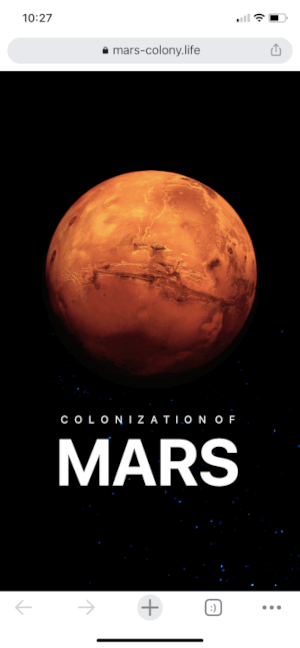

Contrast
Mars-Colony
This is one of the most visually appeal websites I have seen! Their use of contrast is outstanding! Not only does the orange and white stick out, but even the bits of blue in the space themed background bring the background to life!
White Space and Clean Design
OpenTeams
This site is very well layed out for a clean look. They use the white space to help the users eyes easily navigate through the information and then land on the call to action. They make the very few colors in the checkmarks really stand out.
Repetition
Netflix
This website is an excellent example of repetition! It uses the same fonts, colors, and layouts throughout the page, creating a very appealing look to the eyes and emphasizing the sign in and get started buttons with red.